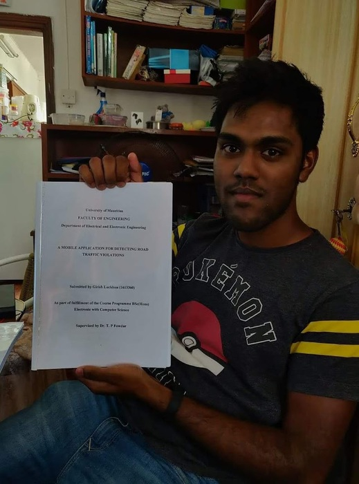
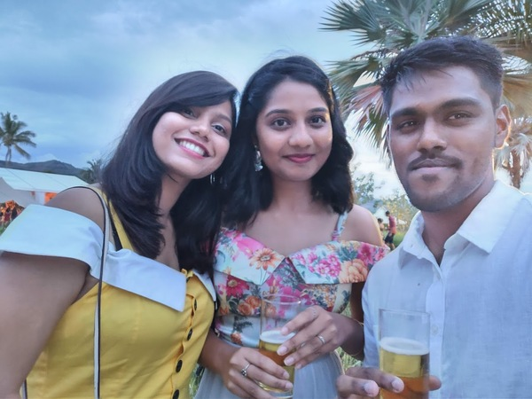
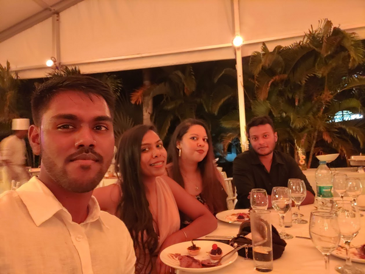
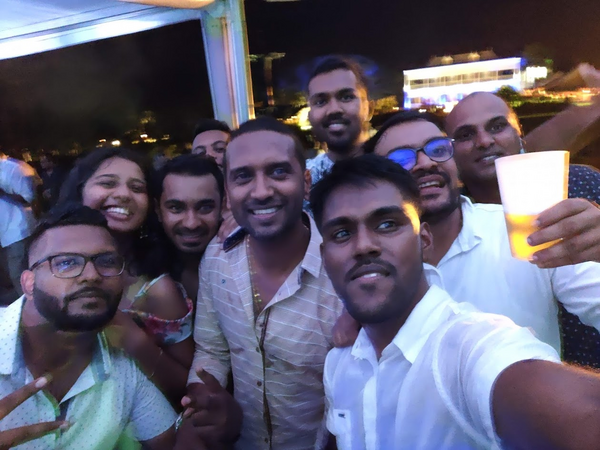
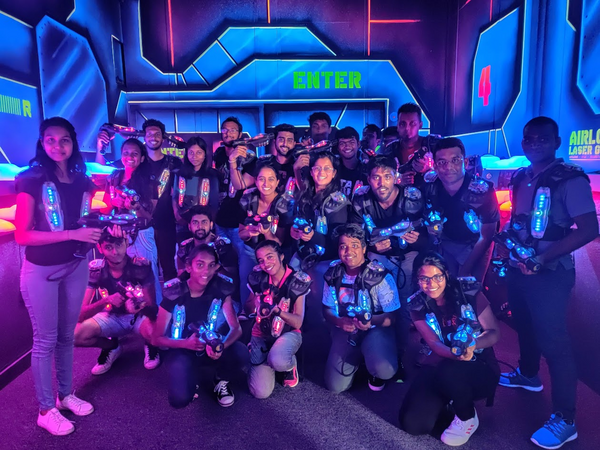

9 minutes
My experience so far
Now that 2022 is almost over, I decided to write about my experience so far in general.
University life
Electrical with computer Science, yes, was an actual course at UOM(university of Mauritius) that I took during my time there. I really didn’t enjoy my university life as much as I should have. I felt like during my entire 20s I was just trailing along, not really enjoying life, always resentful and regretful of my choices, and just wasting my time altogether. But I made some really good friends along the way. The only thing I’m really proud of achieving is getting an A+ on my dissertation. It would not have been possible without the help of my friend. We literally stayed up all night just to finish it. The project was an Android app that can be used to detect any infringement on the road while you’re driving. Feel free to contact me if you want more info; in any case, here’s my [research paper] (https://link.springer.com/chapter/10.1007/978-3-030-90618-4_18).
Here’s a picture of me holding my dissertation (yes, this is my face). ugly? I know): 
First Job
My first job was at Ceridian as an application analyst. During that time, I actually had no idea which career path to go down. You see, if you’re a techie, you know how big the tech world is, and unfortunately for me, I went with the first company that contacted me, which was, of course, Ceridian.The job was basically like a call center. I am sorry if you’re from Ceridian and are reading this, but I absolutely hated my job. It stinks, despite the fact that the salary was excellent for an entry-level employee like me. See, they had an application called DayForce, while the app is game changing in the HR world, my job was mainly to resolve issues that clients faced. And yes, if you’re guessing by now, I only worked on Dayforce. During the three months, I adapted rather quickly, but the longer I stayed at the job, the more I realized that I was only learning the application for the company. I’m not actually learning anything; there are no new technologies. At one point, we were getting training on all sorts of HR-related stuff.
As I said in my previous blog, even though I’m an introvert, I often like to listen to people, especially older people, as I get to hear about their experiences with their mistakes. Opinions from some people serve as an excellent warning sign what not to do. Listen to genuine people who lived their lives and had careers. E.g. never take advice on parenting from someone who is 25 and have no kids. Do not take relationships advice from someone who had never been in at least mid-term relationships. Do not listen to what to read or watch or to do from such people. Listen to people who are nice, and lived their lives and also are always changing. Self-righteous people change very slowly. Because they already have all the “answers.” Be open to the ideas, but really think who are you talking to now. Bad advice is much worse than no advice at all!
So I did. I talked to the system administrators there, who told me being in my current job would get me nowhere if I’m someone who loves to learn. Interestingly, during that time, they were hiring for the post of configuration management. But the mistake I made was telling my manager I hated the job. I know what you’re thinking: “Girish, why did you do that?” Frankly, I don’t know, I so hated my job that I wanted to quit asap. So, I told him, there is an opening for configuration management, and I want to apply for it. So he did his best. I got an interview, which was great, I was so hopeful that I would get it. After one week, I did not get it. I was told that I did not have enough experience for the job and did not have ccna too. That was my first encounter with depression, which hit me really hard. I was really down during these times, and I was also getting pressured by management and HR.
In my opinion, it is still important to listen and reflect on this advice and opinions. But mostly as an exercise in reflection. Opinions from some people serve as an excellent warning sign what not to do.
Before we continue, here are some happy memories I had at Ceridian.
This was during the eoy party with my two work buddies. 
Another selfie, this time with my mentor, who has really helped me since day 1. Since he was a huge Game of Thrones fan, I gave him a Game of Throne Msic Box for Christmas for really helping, teaching, and mentoring me. 
Okay, so last image. This was the drunken team. I don’t remember how much I drank that night, but it was insane, the best eoy party I’d ever been to. I do remember the guys from the system admin team giving me Jack Daniels to drink. Yeah, crazy night. And let’s not forget the walk of shame when I went back to work. I received a lot of compliments. I’m someone who will actually forget about everything when I get on the dance floor. Get me drunk and get me on the dance floor, and you sure will have a night you’ll always remember! 
Let’s get back to the boring stuff, shall we? After getting pressured by the manager, I started applying for other jobs. I eventually got a job interview with SD Worx as a system administrator. I did 3 interviews (2 technical ones and 1 HR). Another major blunder I made at Ceridan was submitting my resignation letter before finding another job. So yeah, this happened, I was so sure I was going to get the job at SD worx that I gave my resignation letter early. Yes, I did not get it, and I was left with no job after I left Ceridian. To make things worse, it was during that time that COVID hit.
Depression phase
The thing about Depression is it kind of collapses time. Suddenly, you find your whole days blending together to create one endless and suffocating loop. So you find yourself trying to remember the things that made you happy. But slowly, your brain begins to erase every memory that ever brought you joy. And eventually, all you can think about is how life has always been this way. An will only continue to be this way. Someone once said that these states will wax and wane. Which gave my mother relief, because it meant that in the bad times, there would be good times. But it also gave her anxiety because it meant that in the good times, there would be bad times. It always confused me, because I didn’t really know what it meant. But it did sound a lot calmer than the way I would describe it. Granted, I didn’t realize until later what waxing and waning implied. That these feelings were fixed and constant and would never end for the rest of my life.
For nearly six months, I was unemployed. Full mode depression I went through a lot of stuff during these periods, having nightmares every day. It was awful, I must say. especially since the lockdown. staying at home, sleeping all day. There were times when I nearly gave up. I was filled with negative thoughts. What kept me sane was anime/manga. I spend most of my time reading manga and books. During these times also, I only stayed in contact with one friend (we didn’t talk for nearly a year, she was kind of an angel sent from the sky to cheer me up). She was always supportive, always encouraging me not to give up. Also, my parents are always looking out for me. And I did; I started to get back in shape. I began to take my career seriously. I applied to a bunch of companies. I got a lot of rejections but never gave up.
Eventually I got an interview at Linkbynet. Lockdown periods were over, so I went and did the technical interview. It was fun; I prepared a lot for this. They did ask me why I was unemployed, and I just kept true to myself and told them about my current situation, why I left the job at Ceridian, and the stuff I’m having to go through. And three days later, I got the job as a junior system administrator. The only issue was that I had to wait another three months to start the job. So I did.
During these three months, I started preparing for my new job. I started learning Linux, System Administrator job. Since my friend was having some issues with her final year project, I kept myself busy.
One of the best achievements of my life was assembling a huge team of 23 people during Cyclone Class 3 to go play laser tag. Yes, I think it was a Sunday; I’m not sure, but 23 people during Cyclone class 3 was nearly an impossible task. Actually, it was class 2 in the morning, and we were still debating whether to go or not. Eventually, we decided to go since the weather was fine. It was only during the ride on the bus that we heard that it had become class 3. I called Funzone (RIP now) immediately to make sure if it would still operate, and luckily it did. Since it was located at 4 Bornes, we walked from Shoprite to 4 Bornes. Yeah, yeah. Not only did I make them come play laser tag, but they also walked nearly 30 minutes during Cyclone class 3. But hey, we had a lot of fun, and it’s something we’ll always remember. Here’s the awesome team:

Second Job
My second job was at Linkbynet (which is now Accenture), which was located in Phoenix, Les hailles. I integrated a team of Junior System admin. The job was okayish but boring since we were doing the same thing every day, like checking if inventory for both Linux and Windows failed or not and checking for any failed patching tickets. Boring, but I eventually learned a lot, and I also developed a script to get all patching tickets from an API to add the data to an Excel sheet. Each sheet represented one client. The script was written in Python and was run every Monday. I also took advantage of the free Azure Certification.It really was a fun experience. I remember doing an exam at 1 a.m. on a Saturday.
After nearly a year of completing all of these certifications, I became a Linux system administrator. Unfortunately, I did not get the team I wanted, but I entered a team called SSCR. The team was all about procedures. We have to follow a procedure for every job we do; it stinks, but we can’t do anything else. Despite all that, I managed to learn a lot of new technologies: Ansible, Terraform, and Kubernetes (although I still have a lot to learn).